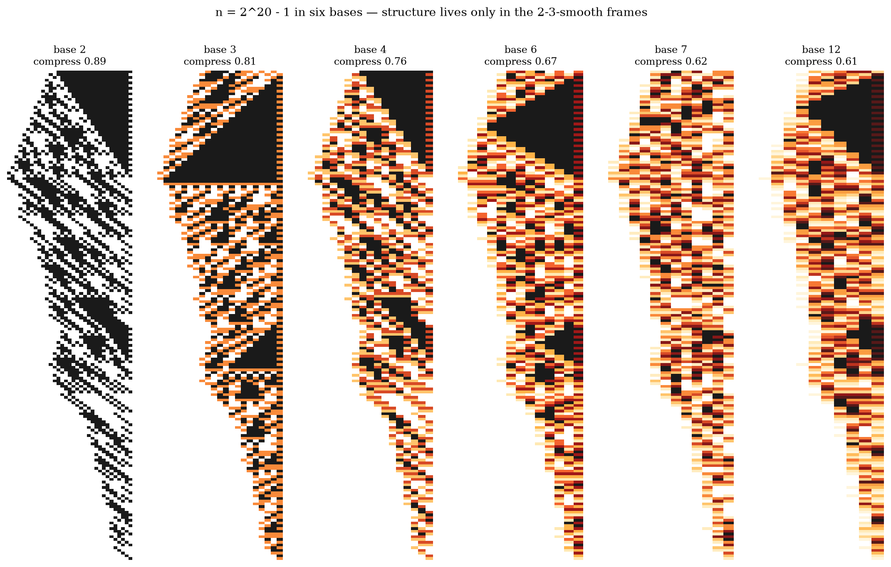

Part 4 of 6. Series index in part 1. Repository: collatz_ai.
Strip away everything deterministic from a Collatz orbit and what remains is a sequence of decisions: after each climb, how many times does the number halve? These decisions look random. The heuristic literature has treated them as coin flips since the 1970s (Terras, Everett — whose classical density theory we happily rediscovered before reading them). What we tried to do is make the coin statement as strong as possible, and then find its limits.
The coin is exactly fair (Thm 115/128). Over uniformly random seeds, the decision stream is exactly an i.i.d. fair process: the probability of any decision prefix consuming D bits is exactly 2^−(D+1), because seeds sharing that prefix form exactly one residue class. Consequently, conditioning on the entire past decision history leaves the next decision at exactly 50/50. There is no pattern in the coin — not approximately, not asymptotically: exactly.
No base helps. We rendered orbits in bases 2, 3, 4, 6, 7, 12 (the gallery is worth your time — order in one base is provable noise in another: 3^1000 − 1 is a thousand 2's in ternary and coin-flips in binary). A local window of base-7 digits carries 0.000065 bits of information about the next decision; three binary digits carry 1.499. Blindness and sight are exactly determined by whether the viewing base shares factors with 2 and 3.
No local quantity helps. We ran systematic searches for local conserved quantities and monotone qualities of the digit strings (the kind of "energy function" that would settle everything): none exists — not for any window size we could test, and provably not for whole shortcut classes (a catalogue of ten no-go theorems in the repo).
And yet the machine is not random at all. Here is the counterweight, and it may be the prettiest thing we found. Two exact structures live alongside the coin without ever touching it:
A fair coin plus a deterministic calendar, and the two never mix. Everything cycle-like lives in the calendar (part 5). Everything unpredictable lives in the coin. The three famous walls of the Collatz problem are, in this language, three one-sentence questions:
We also proved where this framing itself must stop: the coin-fairness is an ensemble statement. For an individual number the "coin" is deterministic, and predicting it without simulation is a computational-lower-bound question (cousin of P vs PSPACE) that current mathematics cannot decide — with the honest note that fair-looking streams can have fast individual formulas (the digits of π do), so the door is not provably closed either. That open door, we think, is the most precise available formulation of why Collatz is hard.
Next: Part 5 — The comma calendar: why every cycle keeps missing by one.
